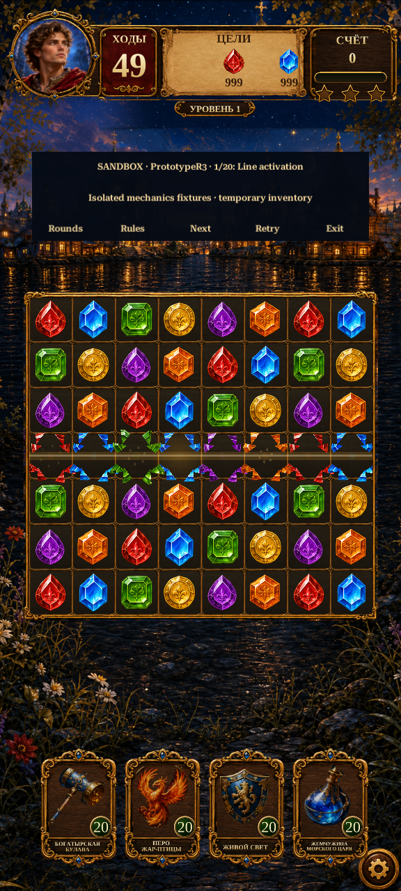

Matching and animation review
The approved artwork can stay. The main remaining problems are inconsistent special-item gestures, hidden-color rules, and effects that do not show the cause of each clear.
Confirmed findings
| Area | Current issue |
|---|
| Bombs and lines | Tap works, but a drag into an ordinary gem can reject. Firebird and rainbow accept that gesture. |
| Hidden colors | Specials still participate in ordinary color matching through an invisible tile ID. |
| Rainbow combinations | Use the partner's hidden color instead of the most common color documented by Royal Kingdom. |
| Firebird payload | Core calculates the carried bomb/line effect, but the renderer never shows the payload. |
| Animation sequence | Whole groups shatter together after a fixed wait. Chain reactions are not timed to visible contact. |
| Materials | Obstacle stages have distinct artwork, but share generic impact shapes. Gem debris repeats the same geometric pattern. |
Existing Unity evidence
Choose one portrait capture. These are earlier R11 automated captures, not a new implementation or a real-time animation recording.

The R9 filenames were retained by the test harness; these images were captured during R11 Verify03.Recommended next pass
First correct interaction semantics in a new sandbox rule version. Then implement creation gathering, combination merging, visible conversion/payloads and contact-driven clear timing. Preserve current art and level budgets; recheck effective difficulty after the rule changes.
Normal campaign still uses Legacy rules. The five-round sandbox uses PrototypeR3. Campaign migration remains a separate step.
Full comparison, source findings and implementation order · 30 diagnostic cases
Official power-up rules · Official combinations
Review only. Actual core sources compiled/executed with Unity's bundled compiler and Mono; no new Unity Editor or Android runtime test. No gameplay code or assets changed.